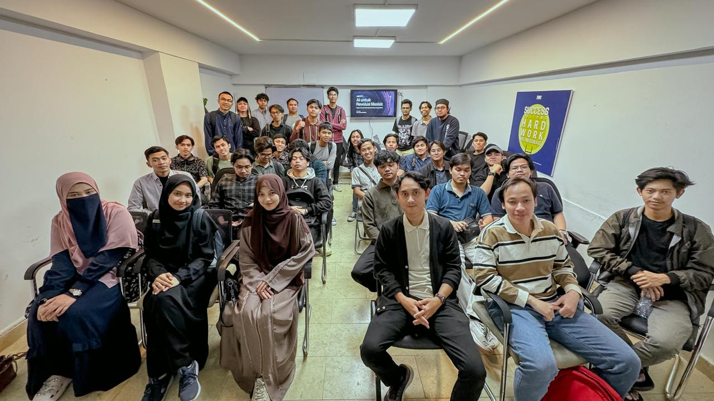
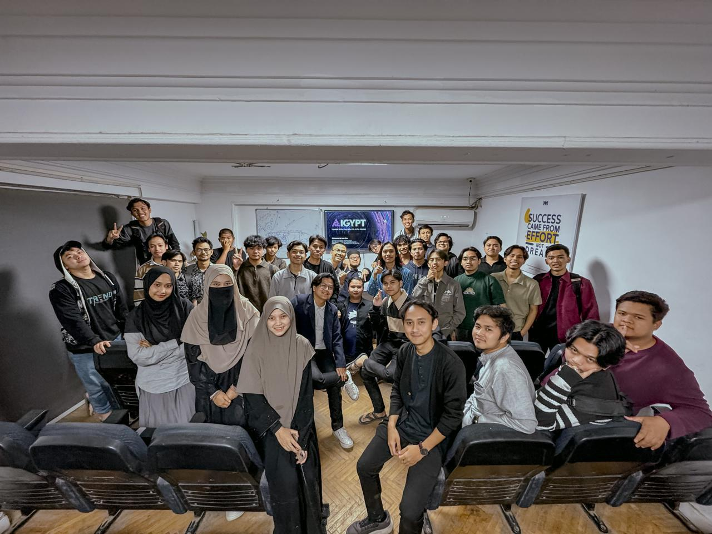
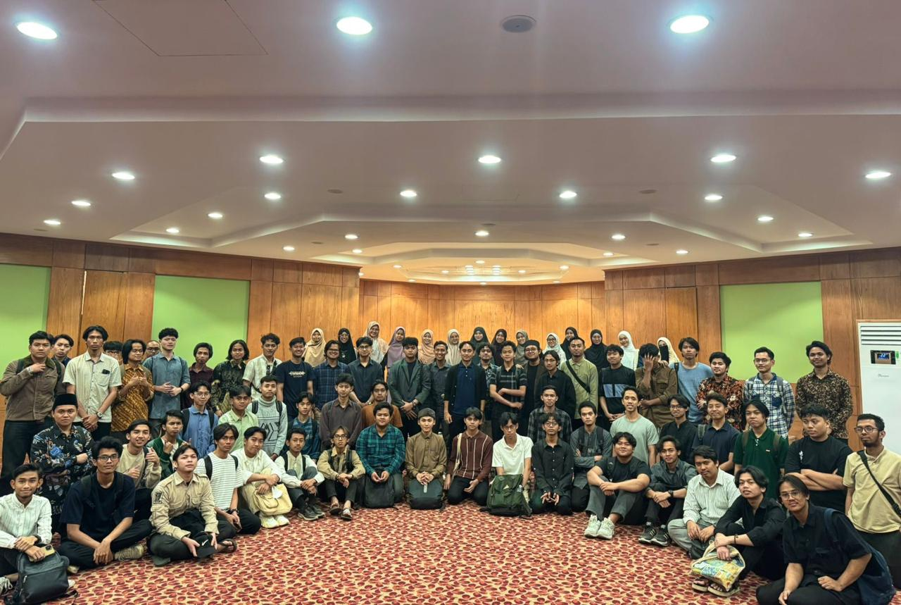
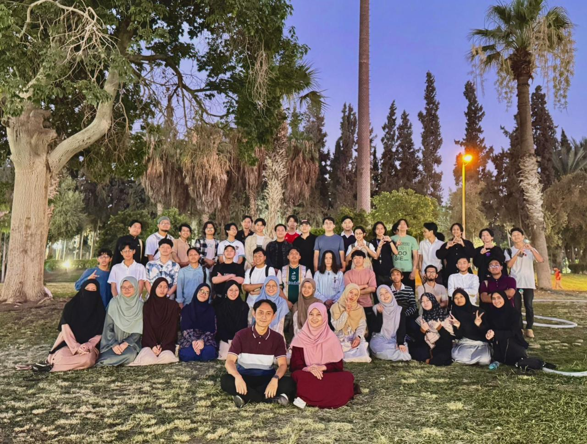
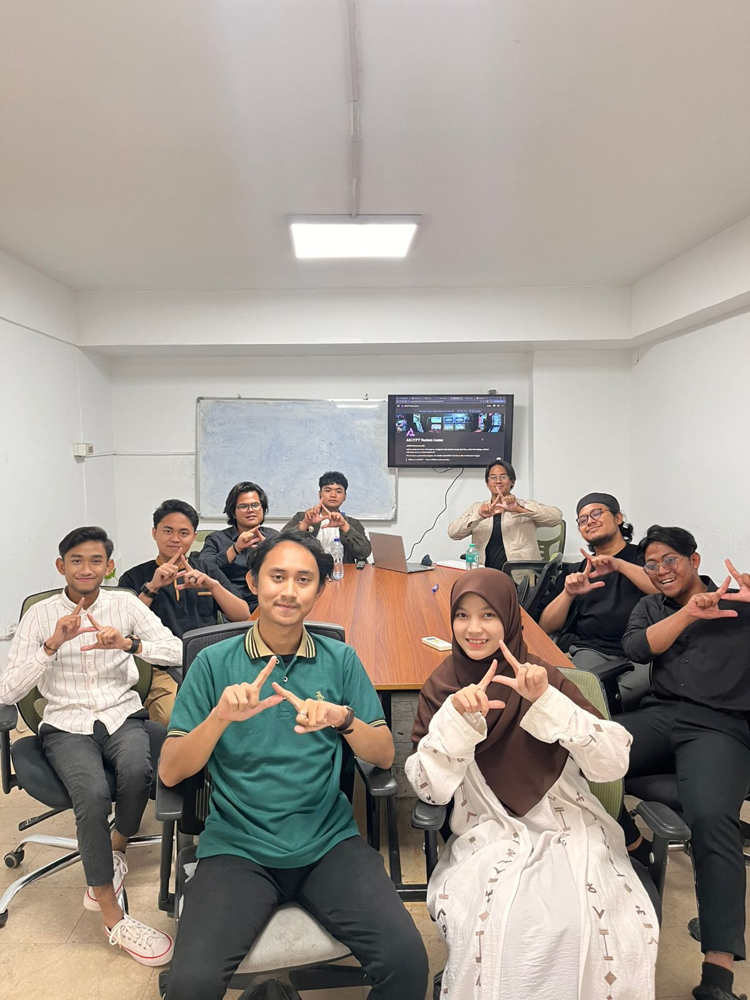
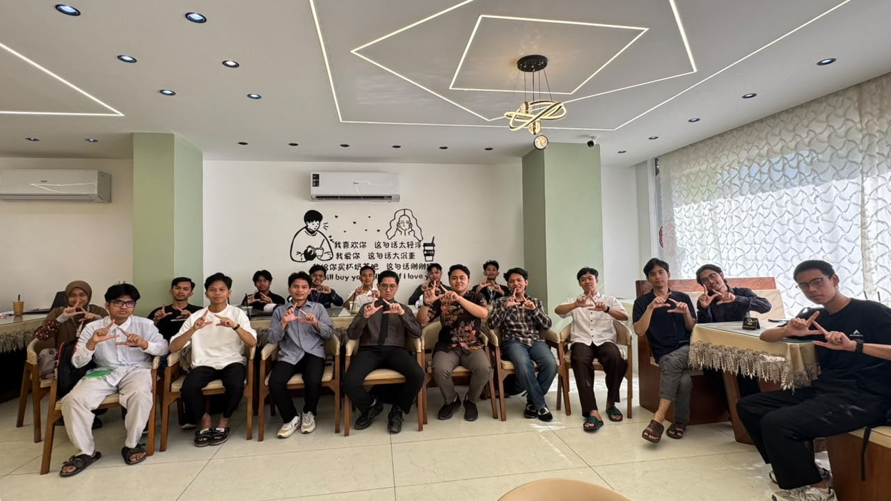
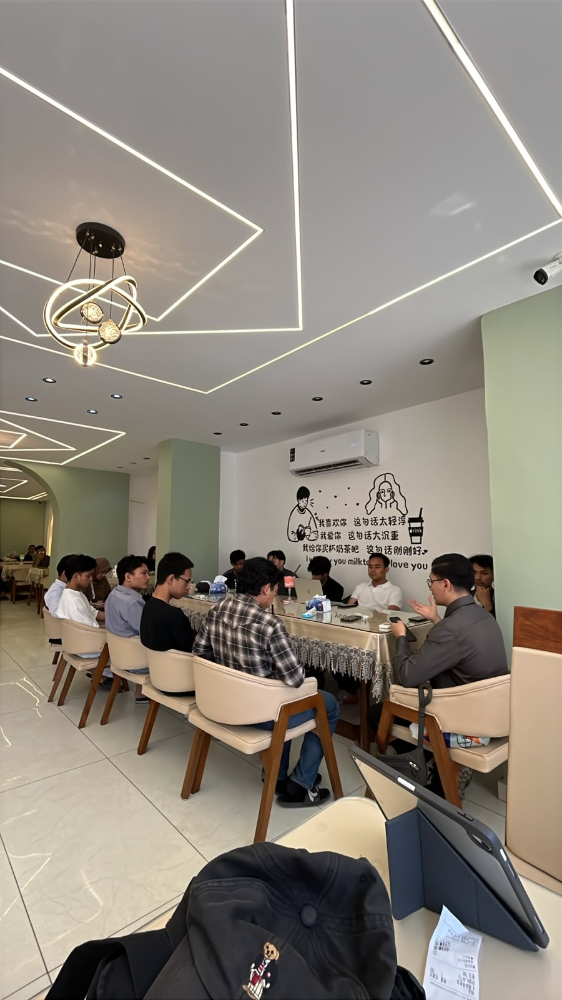
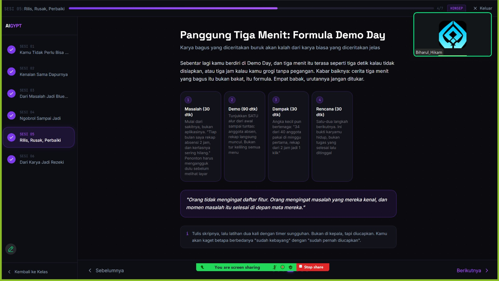

AIGYPT × AINA · PROFIL KOMUNITAS
Update Skills. Upgrade Life. AI for Masisir.
AI bukan masa depan — AI adalah kenyataan. Dan sekarang, Masisir gak cuma jadi penonton: kita ikut main di dalamnya. Welcome to the New Era.
TEKAN SPASI / SCROLL ↓
01 · KENAPA AIGYPT ADA
Dunia berubah lebih cepat dari yang kita bayangkan.
Teknologi melesat, tuntutan makin tinggi, dan efisiensi jadi harga mati. Tapi mahasiswa Indonesia di Mesir masih mengandalkan cara-cara lama.
Fokus ngaji & kuliah
- Catatan tercecer, materi gak terorganisir.
- Belajar manual, hafalan tidak terstruktur.
- Susah cari referensi & nulis makalah.
Aktivis organisasi
- Capek bikin laporan, proposal, & notulen manual.
- Waktu habis buat teknis, bukan ide strategis.
- Sibuk tapi tidak produktif.
Pebisnis Masisir
- Promosi masih manual & gak konsisten.
- Bingung bikin caption / iklan menarik.
- Gak tahu cara auto-respond & analisis pasar.
Freelancer & kreator
- Mentok di inspirasi.
- Riset, desain, caption, posting — sendiri.
- Bingung bangun personal branding.
AI bukan sekadar tren. Kalau dipahami, AI bisa mengubah total cara kita belajar, bekerja, berorganisasi — bahkan membangun penghasilan.
02 · ARAH GERAK
Satu visi, dua babak.
Kenalkan
Memperkenalkan penggunaan AI di lingkungan Masisir dalam kehidupan sehari-hari: belajar lebih terstruktur, organisasi lebih efisien, bisnis lebih hidup.
Karyakan
Mengajak Masisir menghasilkan produk solusi dari masalah yang dialami sehari-hari. Dari pengguna jadi pembuat — dan bukti pertamanya sudah lahir: AINA.
Titik nol: AI untuk Revolusi Masisir
Kelas perdana yang membuka semuanya. Mindset AI & kode etik untuk Masisir pertama kali dibangun — menjawab keraguan, membedah pro-kontra, dan mengenalkan dasar prompting. Ruangan penuh, dan satu hal jadi jelas: Masisir siap untuk era baru.


Skala membesar: dari kelas jadi komunitas
Antusiasme meledak. Peserta datang dari berbagai kalangan — yang fokus ngaji, aktivis organisasi, pebisnis, sampai kreator. Materi masuk ke tools praktis untuk keseharian, dan AIGYPT mulai terasa bukan sekadar kelas, tapi komunitas belajar bersama.



Dari belajar ke berkarya
Babak baru menuju visi 2026. Peserta gak cuma belajar pakai AI — mereka membangun karya dari masalah sehari-hari, dibimbing lewat platform belajar milik AIGYPT sendiri: dari ide, blueprint, rilis-rusak-perbaiki, sampai tampil di Demo Day.



04 · APA YANG DIPELAJARI
Step by step menuju hidup lebih mudah dengan AI.
-
01
Mindset AI & Kode Etik — AI sebagai alat bantu, bukan pengganti guru & adab keilmuan.
-
02
ChatGPT & Prompting Dasar — nanya yang bener biar jawabannya bener.
-
03
Canva AI & Konten Cerdas — desain menarik tanpa harus jago desain dulu.
-
04
Notion AI & Manajemen Hidup — catatan rapi, jadwal teratur, hidup terkendali.
-
05
AI untuk Bisnis & Organisasi — proposal, laporan, promosi, auto-respond.
-
06
Showcase Proyek + Sertifikasi — karya nyata + sertifikat eksklusif.
Terbuka untuk semua kalangan — mahasiswa S1–S2 Al-Azhar, aktivis organisasi, pebisnis, freelancer & kreator.
05 · PRODUK — VISI 2026 JADI NYATA
Kenalin, AINA.
Asisten pintar Masisir. Dibangun dari masalah sehari-hari Masisir, oleh Masisir — bukti bahwa kita bukan cuma pengguna AI, tapi pembuatnya.
urusan kampus, dokumen, izin tinggal
belajar, rangkuman, muroja'ah
visa, kurs, transportasi, tips Kairo
"AI buat semua yang pengen hidup lebih gampang. Masisir gak boleh cuma nonton dari pinggir — kita harus ikut main, dan ikut membangun."
— DARU · FOUNDER AIGYPT
Ayo jadi bagian dari revolusi ini!
AIGYPT terbuka untuk kolaborasi dengan siapapun — individu, organisasi, maupun lembaga.